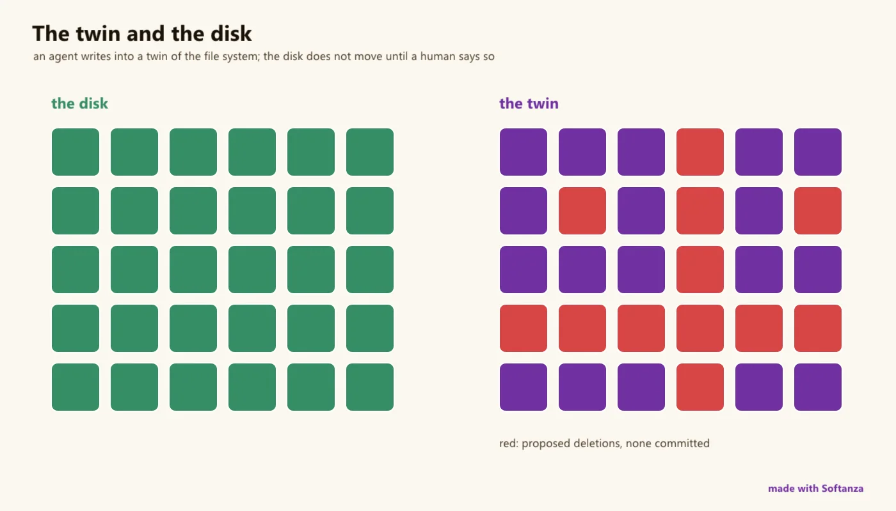

Une surface d'effets gouvernés, pas une copie des bibliothèques standard de Go ou de Rust : répéter puis commettre ; un modèle ne peut pas agir, par construction.
Seul le moteur touche le vrai système. Tout ce qui est au-dessus est une vue ou une répétition, et la réalité ne change que lorsqu'un plan gouverné franchit l'unique porte.
Les primitives sont celles dont un programme a besoin et pas plus : des processus enfants gérés que l'on lance, lit, attend et tue sans fuite ; l'environnement et le dossier courant ; fichiers et dossiers ; des horloges monotones tenues à part de l'horloge murale, parce qu'une durée mesurée sur une horloge que l'on peut régler n'est pas une mesure. Ce qu'aucune bibliothèque standard n'a, c'est la couche au-dessus. Un changement est d'abord essayé dans un jumeau en mémoire, stzVirtualFileSystem, qui ne tient aucune référence à la réalité ; il en sort comme un plan en langage clair, create folder 'config', create file 'config/greenhouse.ini', et rien ne bouge sur le disque tant que le plan n'est pas commis par un acteur habilité à causer des effets.
Imaginer un changement et l'accomplir sont deux pouvoirs séparés. Un acteur modèle de langage ne détient aucun pouvoir d'agir : il peut proposer un plan mais jamais le commettre, un fait que les gardes prouvent avec des fichiers témoins sur le disque. Le code système s'écrit dans un périmètre nommé, développement, déploiement ou exécution, de sorte que le code pour un téléphone est vérifié contre le téléphone, et qu'un acte interdit est refusé à l'écriture. Le jumeau tient aussi lieu d'une machine que l'on n'a pas : les broches d'un microcontrôleur se répètent sur un portable puis sont abaissées en micrologiciel.
Au-dessus se tient un plan de livraison complet : définir la solution et ses cibles, émuler chaque partie dans le navigateur sur le même moteur compilé qu'elle livrera, planifier le déploiement comme une suite d'étapes ordonnées, gardées et réversibles, provisionner ce que chaque site exige, et déployer d'un seul verbe qui répète en émulation et commet en production. Les manques sont les pièces classiques que la surface a laissées de côté à dessein, signaux, IPC large, le bas de la surface système, à ajouter quand de vraies charges les mériteront.

un agent écrit dans un jumeau du système de fichiers ; le disque ne bouge pas. dessiné le 2026-10-01 par le script du site tools/areas-figurative.ring, exécuté dans la bibliothèque au commit 0e72e2e2c · la source(s'ouvre dans un nouvel onglet)
Où il en est
La lecture du Compas Softanza : chaque couloir du domaine noté face au meilleur de sa catégorie, d'après ce que les gardes prouvent (Read from the source on 2026-09-16, from a read-only main worktree). Les phrases du Compas sont en anglais, telles qu'il les a écrites.
Deliberately not a Go/Rust-std system library. The primitives it exposes — managed child processes, environment, working directory, filesystem, monotonic clocks, a libuv reactor — are a clean but intentional subset of what those stdlibs and libuv carry. What it adds that none of them have is the layer above: an in-memory rehearsal twin over files, env and spawns, a single narrated / scoped / audited stzUpdatePlan that is the only bridge to reality, and a capability-actor lattice where an inference-only (LLM) actor's effect set is empty by construction — "agents that cannot hurt you," enforced in code. On top sits a complete delivery plane. It omits by design what a governed-effects surface doesn't need: signals, broad IPC, the raw syscall zoo.
The honesty line on the ratings. Re-surveyed from main. Heavily guarded (~335 assertions across eight+ guards) proving exactly the distinctive parts: uptime is monotonic seconds not epoch (the fix), SystemCall is a single spawn (the double-exec fix), a queued spawn does not run until commit (marker-file verified), an LLM empty-effect actor commits nothing across files and env, and out-of-scope operations never reach disk. One test errors (test_system_engine2.ring — a stale engine binding). The deploy plane's Git/LocalRepo backends are proven end-to-end; ssh/aws/registry/device are command-generated and infra-gated.
The one-sentence position. Softanza's system layer is not trying to out-surface Go or Rust — it exposes a deliberate subset of OS primitives and wraps them in the one thing those stdlibs lack: a rehearse-then-commit, capability-gated bridge to reality where an LLM cannot act by construction; its gaps are the classic OS pieces (signals, IPC, full async, the lower syscall surface) it will add as real workloads earn them.
Ce qu'un artisan en fait, et ce qui se distingue
A rehearsal twin over files, env and spawns that touches nothing
stzUpdatePlan: the sole crossing to reality, through three gates (reject, scope, governance)
An inference-only (LLM) actor's effect set is empty by construction -- agents that cannot hurt you
Deploy(:Production) gated by MayCommit; Git and LocalRepo backends proven byte-for-byte
Ce qui est dû
Signal handling (SIGINT/SIGTERM/SIGCHLD and Windows console-control)
The full async reactor surface
Complete the process face (ExePath, IsAlive, process table); live-verify ssh/docker/device deploy backends
Richer IPC and the lower OS surface (permissions, symlinks, users/groups); wire the engine sandbox flag
Repensé depuis les premiers principes
Ce que Softanza a gardé de ce qui marche, et ce qu'elle a repensé, tel que la bibliothèque l'a écrit dans ses documents de conception et ses narrations.
La manière SoftanzaSeul le moteur touche le système réel ; tout ce qui est au-dessus n'en est qu'une vue ou une répétition, et la réalité ne change que lorsqu'un plan autorisé franchit l'unique porte.
Gardé des meilleures pratiques
L'action directe reste possible : les vraies classes de fichiers, dossiers et processus agissent immédiatement. La répétition est recommandée pour les changements lourds, pas imposée. source(s'ouvre dans un nouvel onglet)
Les processus enfants se gèrent de façon classique : lancer, lire la sortie au fil de l'eau, attendre, lire le code de sortie, arrêter. Fermer un descripteur arrête l'enfant : rien ne fuit. source(s'ouvre dans un nouvel onglet)
Compiler pour une autre machine réutilise le compilateur croisé de Zig : le système et le processeur de la cible de déploiement forment simplement le triplet de compilation. source(s'ouvre dans un nouvel onglet)
Repensé
Répéter, planifier, valider. Les changements s'essaient dans un jumeau en mémoire, sans lien avec le réel ; seul un plan de mise à jour les fait passer au système réel. source(s'ouvre dans un nouvel onglet)
Imaginer un changement et l'exécuter sont deux pouvoirs séparés. Un acteur de type modèle de langage n'a aucun droit d'agir : il propose, il ne valide jamais. source(s'ouvre dans un nouvel onglet)
Le code système s'écrit dans une portée nommée : développement, déploiement ou exécution. Le code destiné à un téléphone est vérifié pour ce téléphone ; un acte interdit est refusé dès l'écriture. source(s'ouvre dans un nouvel onglet)
Le jumeau remplace aussi une machine absente : les broches d'un microcontrôleur se simulent sur un portable, puis deviennent le code source du micrologiciel pour l'appareil réel. source(s'ouvre dans un nouvel onglet)
La manière Softanza, exécutée
Ce que Softanza fait autrement dans ce domaine, montré par du code tiré de ses narrations et de ses gardes, et exécuté pour cette page.
Les changements de fichiers se répètent dans un jumeau en mémoire et donnent un plan lisible ; rien ne change sur le disque avant la validation du plan.
One closed capability lattice (effectful/sensing/compute/inference + postures) in stzSystemActor; a rehearsal twin (stzVirtualSystem / stzVirtualFileSystem / stzVirtualEnvironment) that touches nothing; and stzUpdatePlan — the sole crossing — which commits only through three gates (reject · scope · governance). An LLM actor's effect set is empty, so it commits nothing, in every domain.
Measured against
Go std (none)Rust std (none)libuv (none)
To complete
No stdlib has any of this — it is the substrate the agentic safe-world binding rides on. Proven: a queued spawn does not run until commit (marker-file verified); scope refusals never reach disk. A genuine category-of-one.
02Process / subprocess managementSolid
In the engine
Managed children (system.zig): Spawn, streaming ReadOutput/ReadError, Wait, ExitCode, Kill, no-leak Close — plus a SystemCall front whose double-exec bug is fixed (one spawn returns [stdout, exit, stderr]).
Measured against
Go os/execRust std::processlibuv spawn
To complete
ExePath, IsAlive and a process table are named but have no Haro consumer yet; no pty. The common lifecycle is clean and leak-safe.
03Environment & working directorySolid
In the engine
Get / set / unset / list env vars, cwd get/set, hostname, username, cpu-count — engine-backed. On Windows, a set value uses SetEnvironmentVariableW so later child spawns inherit it.
Measured against
Go osRust std::env
To complete
Complete for the everyday surface, and correctly wired to child inheritance. Nothing structural owed.
04Filesystem operationsSolid
In the engine
file.zig: read / write / append / copy / delete / stat, and dir create / delete / list / walk / count — path args screened by pathIsUsable. The rehearsal twin adds governed create/write/copy/move over the same primitives.
Measured against
Go os / ioRust std::fs
To complete
Covers the common ops (and adds a twin no stdlib has) — but omits permissions, ownership, symlinks and fifos that Go/Rust std carry (see lane 11).
05OS / platform detection & machine infoSolid
In the engine
OS / arch / endianness / pointer-size / bit-size, cpu-count, machine memory (total/free) and process memory (RSS/peak/CPU-time), with declared profiles that model non-host targets (rtos/android/esp32). Discipline: "facts are engine, opinions are Haro" — the old Haro getarch() was retired.
Measured against
Go runtimeRust stdsysinfo crates
To complete
Solid machine/process facts with no double source — but not a deep sysinfo (no per-disk, per-NIC, load average or thermals).
06Time & clocksSolid
In the engine
time.zig: monotonic ns/us/ms, wall UTC, sleep, and clock resolution — with process uptime taken from a monotonic base instant captured at DLL load (the old epoch-uptime bug is fixed and guarded).
Measured against
Go timeRust std::timelibuv
To complete
Monotonic-vs-wall is correctly separated (a real correctness win). Calendar / timezone time is the datetime module's, by design.
07Deployment planeSolid
In the engine
A governed define → require → feasibility → plan → execute → ship pipeline in one vocabulary: stzDeployment + stzDeploymentSite with a step DAG, rollback and provisioning. Deploy(:Production) is real and gated (MayCommit = actor holds effectful); a bare call touches nothing. Git and LocalRepo backends proven byte-for-byte.
Measured against
Ansible / CapistranoTerraformDocker deploy
To complete
Server (scp/ssh), Registry (docker) and Device (flash) backends generate correct commands but are not yet live-verified against a real host / account — "one reachable host away from literal."
08Build & emulationSolid
In the engine
stzBuilder + build.zig wasm produce a bundle; stzEmulator gives Deploy(:Emulated) a rehearsed run; stzWebBundle packages the WASM edge; stzPlatform drives Build→Deploy (refusing to deploy what wasn't built).
Measured against
build systemsDocker buildesbuild / bundlers
To complete
A real build+emulate stage feeding the deploy plane — focused on Softanza's own artifacts (WASM edge, deployable bundles), not a general build tool.
09Threading / async (reactor)Partial
In the engine
reactor.zig is a libuv-backed cross-platform event loop (epoll / kqueue / IOCP), but in this group only its first slice ships — version + selftest.
Measured against
libuv (full)Go goroutinesRust async / tokio
To complete
The full async multiplexing surface is the Concurrency & distribution plane's, and only its first slice is here. No thread-spawn API in the system group (threads is a lattice token, not a call).
10Low-level OS surfacePartial
In the engine
Path helpers (extension / basename / dirname) and the common file/dir ops ship; a coarse engine sandbox flag (stz_config_sandbox) is designed as a belt-and-braces companion to the twin.
Measured against
Go syscall / osRust std + nixlibuv
To complete
Deliberately omitted: file permissions / ownership / symlinks / fifos, mmap, users/groups, ptrace, raw syscalls. A focused governed surface, not an os/syscall clone.
11IPCPartial
In the engine
Inter-process communication is the managed child's stdout / stderr / stdin pipes — enough to drive and read a subprocess.
Measured against
Go (pipes / net)Rustlibuv (pipes / named)
To complete
No named pipes, shared memory or socketpair IPC. Cross-process coordination beyond parent↔child stdio is not a lane yet (sockets are the network module's).
12SignalsEmerging
In the engine
None. There is no signal handling — grep finds no stz_signal* in the engine and no Haro signal class.
Measured against
Go os/signalRust signal-hooklibuv signals
To complete
No SIGINT / SIGTERM / SIGCHLD handling — so no graceful shutdown, no child-reaping on signal, no Ctrl-C hook. A real gap for a system-programming surface.
Ce qui est dû, dans l'ordre du rendement
Les manques, classés par ce qu'ils rapportent et non par leur taille ; la valeur est l'effet sur la portée de la bibliothèque, l'effort une lecture d'ingénieur.
Tier A — load-bearing omissions
Signal handling
SIGINT / SIGTERM / SIGCHLD (and the Windows console-control equivalents) — the difference between a process that can shut down gracefully and reap its children and one that can't. Absent today, and essential for anything long-running.
Valeur · élevéeEffort · moyen
The full async reactor surface
Only the reactor's first slice ships here; real async multiplexing (timers, I/O, tasks) is the Concurrency & distribution plane's — and it is what most I/O-bound system work needs. Landing it turns a governed effects surface into a governed runtime.
Valeur · élevéeEffort · élevé
Tier B — finish the named pieces
Complete the process face
ExePath, IsAlive and the process table (proc_list/proc_exists) are named but have no Haro consumer. Small additions over the existing engine surface.
Valeur · moyenneEffort · faible
Live-verify the deploy backends
Server (ssh/scp), Registry (docker) and Device (flash) generate correct commands but aren't run against a real host/account. Proving one of each end-to-end makes "one host away from literal" actually literal.
Valeur · moyenneEffort · moyen
Unify SystemCall over Spawn
Re-express stzSystemCall over stzProcess.Spawn so there is one spawn implementation, not two. The double-exec fix already landed; this removes the remaining parallel path.
Valeur · faibleEffort · faible
Tier C — OS breadth, on demand
The lower OS surface
File permissions / ownership / symlinks, users/groups, and the metadata the stdlibs carry — added where a real workload needs them, keeping the governed-effects framing rather than cloning os/syscall wholesale.
Valeur · moyenneEffort · élevé
Richer IPC
Named pipes, shared memory and socketpair beyond child stdio — the cross-process coordination a multi-process app eventually needs, ideally as governed operations under the twin.
Valeur · moyenneEffort · moyen
The engine sandbox flag
Wire the designed coarse stz_config_sandbox as the belt-and-braces companion to the twin — a hard engine-level backstop under the soft governance gate, so even a bug in Haro can't cross to reality.
Valeur · moyenneEffort · moyen
La conception, telle que la bibliothèque l'a écrite (9)
Les documents de conception de ce domaine, lus dans le dépôt au commit 4a184e6f0 : ce que chacun est, son plan, et le lien vers le texte entier.
The Softanza System Foundation
705 lignes · 11 sections · écrit le 2026-07-20, revu le 2026-07-22
Document de conception, marqué complet jusqu'à la phase 4, repensant la programmation système aux premiers principes : chaque fait et mutation système vit une fois dans le moteur Zig, la réalité s'atteint par une porte, répéter, planifier, valider, répéter et valider étant des pouvoirs séparés.
Le plan
0. Why this document exists
1. First principles
2. The programmer's model — three system scopes over one solution
3. The four layers
4. Layer 0 — the engine as the system's single source of truth
5. Layer 1 — the real projection (thin, intent-named)
6. Layer 2 — the Virtual System (the universal abstraction + sandbox)
Carte du plan de livraison reliant ses documents de conception et tutoriels : de la définition d'une solution à son exécution sur cibles réelles, un graphe d'objets, un vocabulaire ; le moteur, non l'interpréteur, compile en WebAssembly ; tout acteur peut répéter, seul un acteur à effets valide.
Document de conception, marqué construit (garde de 45 assertions), pour la technologie de déploiement : une cible est un site décrit par une configuration, qui est le lien, déployer est un acte gouverné (lier, stocker, lancer, rapporter), le même verbe répète en émulation, valide en production.
Le plan
1. The problem: after "it works", the target is still a maze
2. The thesis: a target is a config-described *site*, and the config is the link
3. The deployment act: bind, store, launch, report
4. Governed: expression is free, admission is governed
5. One verb, two phases — `Deploy(:Emulated)` rehearses, `Deploy(:Production)` commits
Document de conception, marqué construit, modélisant les deux dimensions difficiles d'un déploiement : un plan d'étapes ordonné, conditionné et réversible à travers les sites, et les ressources d'hôte que chaque partie exige, vérifiées contre la capacité d'un site et provisionnées par un fournisseur, vers l'automatisation complète.
371 lignes · 10 sections · écrit le 2026-07-22, revu le 2026-07-23
Document de conception, marqué construit, pour l'émulation : l'émulateur ne simule pas, chaque partie d'une solution multi-cibles exécutant dans le navigateur le même sous-ensemble compilé du moteur Zig qu'elle livrera, Deploy étant un verbe à deux phases, un contrat de fidélité, un état partagé entre parties.
Le plan
1. The problem: deployment is where confidence goes to die
2. The thesis: emulate for real — *compile the engine, not the interpreter*
3. `Deploy()` is dual-phase — the deploy scope is the frame
255 lignes · 8 sections · écrit le 2026-07-09, revu le 2026-07-20
Narration d'exigences et référence d'architecture, version 1.2, pour le cadre de système virtuel : tout système non géré reçoit un jumeau en mémoire sans référence à la réalité ; on répète, planifie et valide par une traversée gouvernée, les fichiers d'abord, sur une route en quatre phases.
Relevé de direction pour le Tier 2, daté du 2026-06-14 : la décision d'intégrer libuv comme socle d'E/S asynchrones multiplateforme plutôt que d'écrire un réacteur maison, l'architecture qui le relie au langage hôte, l'échelle construire-ou-acheter, et le choix tranché de libcurl intégré pour HTTP.
Courte conception d'un binaire unique softanza en ligne de commande, écrit en Zig, qui embarque l'Engine et lance le langage hôte, avec les commandes run, test, build, version, doctor et un futur notebook, présentée comme un plan de réalisation en trois phases.
Note de conception, au statut construit, pour stzLog : un journal est une donnée structurée, non un flux de chaînes ; chaque entrée est un enregistrement horodaté et nivelé, aux champs filtrables et interrogeables dans le processus, rendu en texte ou JSON, branché sur le plan de livraison.
Softanza's System Call : Built on the System Process API2025 · tutorialHaro's native system() function works well for cross-platform command execution. Softanza enhances this foundation through stzsystem() function and stzSystemCall class , leveraging the Softanza Engine's system process API for:
From Dev to Deploy Without Leaving Your Editor2026 · seriesBuilding a product that runs on more than one machine is, in most stacks, an exercise in tool management. A backend that deploys to a Linux server, a phone app that ships to Android, firmware that flashes to a microcontroller — each is a different world, re...
Deploying to the Target Sites2026 · seriesThe emulator answered the hard question: does it work? Every part ran its real engine in the browser, so you know the solution is sound. But sound isn't shipped.
Emulating the Whole Solution2026 · seriesMost stacks let you run a part in isolation and simulate the rest. You boot the phone app in an emulator that talks to a mocked backend; you flash firmware to a dev board wired to a fake sensor.
Planning and Provisioning a Deployment2026 · seriesDeploying the target sites taught the verbs: store, launch, report, all governed. But real rollouts are rarely one step. The backend must come up before the frontend that calls it. A health check must pass before you proceed.
Code First, Subscribe Later2026 · seriesYou have decided to build a small shop. You will need a payment gateway, a database, somewhere to keep uploaded images, an SMS sender for one-time codes, a model to summarise reviews, and a currency-rates API. Six vendors.
The Engine Senses2026 · design essayBefore P1, the Softanza engine could tell time with nanosecond precision -- and nothing else about itself. No process memory, no system memory, no CPU time.
Les classes de ce domaine (35)
Chaque classe mène à sa page de référence : ses méthodes, chacune avec un exemple exécuté.